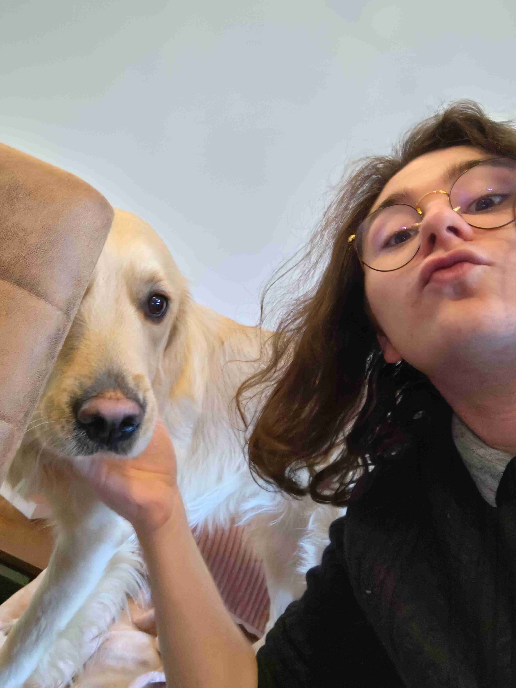

CONTACT
- Adresse : 307 Rue Brisée, 7020 Maisières
- Téléphone :
+32 489 62 77 70
- Email : theo.dub@yahoo.com
- www.adnyx.net
- github.com/Adnyx
COMPÉTENCES
- Git
- Linux
- Windows Server
- SCRUM
- LANGUAGES:
- Python
- HTML/CSS
- JavaScript
- PHP
- SQL
HOBBIES
- Guitare/musique
- Lecture
LANGUES
- Français: langue maternelle
- Anglais: C1
- Néerlandais: Basique
PROFIL
Étudiant en informatique, passionné par le réseau et par la musique. Je cherche un travail qui puisse enrichir mon expérience.
ÉTUDES
École internationnale du SHAPE section Belge
Projet de fin d'étude: Afin d'apprendre les bases de l'informatique, avec un partenaire, nous avons créé un assistant vocal en python que nous avons présenté à Science-Expo (https://science-expo.be/)
Haute École en Hainaut
Bachelier en Informatique Orientation réseaux & télécommunications option Sécurité
Projets:
- Projet interdisciplinaire:
- hackaton placeholder
- homelab placeholder
TRAVAIL
Étudiant caissier/réassortisseur
Au Lidl de Binche et de Mons-Hyon